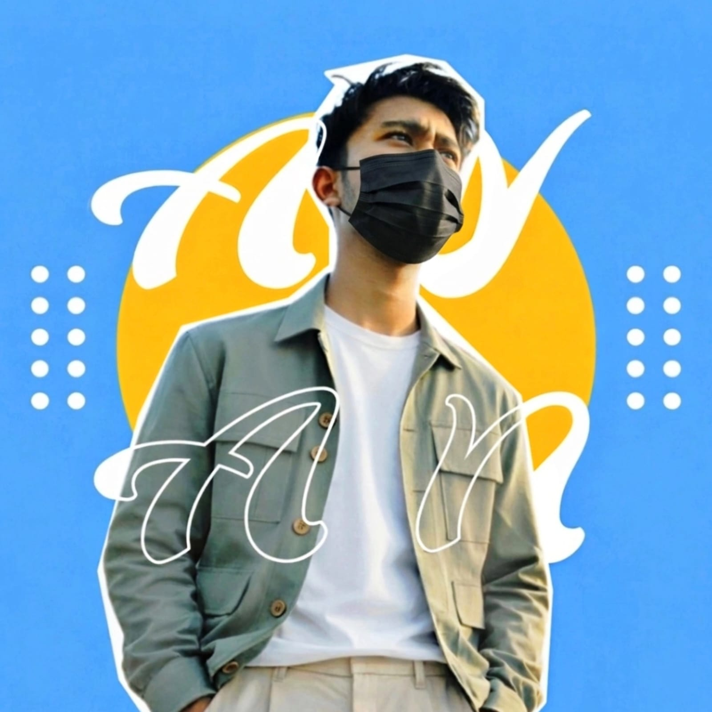

Hello everyone! My name is Ayan, and I am the founder of Out Of you Animation.
Out Of you Animation is a creative animation studio focused on bringing original ideas and engaging stories to life through animation. Our goal is to create high-quality, visually appealing content that connects with audiences and showcases our passion for creativity and storytelling. I'm excited to share our work, ideas, and journey with all of you. Thank you for being a part of it!

Beyond storytelling, my mission is to merge code with creativity to craft interactive digital experiences. I am actively laying a strong foundation in core programming technologies like C, HTML, and CSS to understand how web structures and software logic work from the ground up. By bridging the gap between front-end web development and visual animation, I aim to design smooth, visually captivating web pages that turn simple concepts into engaging digital reality. Every project I build is a step forward in expanding my technical skills and bringing fresh ideas to life.
I have a strong foundation in programming languages such as C, HTML, and CSS. I am also proficient in using various animation tools and software to bring creative ideas to life.
I am passionate about animation, coding, and digital art. I enjoy exploring new technologies and techniques to enhance my skills and create innovative projects.
I am continuously learning and improving my skills in programming, animation, and web development. I am committed to staying updated with the latest trends and technologies in the industry.